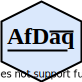

AfDaq documentation
2021-05-06
Preface

Arduino Firmata Data Acquisition (AfDaq)
A plug and play MATLAB based tool for biofeedback and Arduino based instruments
Developer
Kulbhushan Chand
Ph.D. Research Scholar
Emerging Technologies Lab
Department of Electronics and Communication Engineering
Dr B R Ambedkar National Institute of Technology
Jalandhar, India
Links
This project is open data, open code, and replicable research.
- The code is available at GitHub repository.
- Browse source code at https://github.com/kulbhushanchand/AfDaq
- Download from release page at https://github.com/kulbhushanchand/AfDaq/releases
- Report a bug at https://github.com/kulbhushanchand/AfDaq/issues
In case you are interested in the research, design, and development of this software, the code, data, and analysis scripts that support the findings of the study are available at OSF Repository.
License
This project is distributed under the GPLv3 License. See LICENSE for more information.
Citation
This software code is a part of the open-source project AfDaq: An Open-source MATLAB-based Real-time Multi-channel Data Acquisition Tool for Biofeedback and Arduino-based Instruments. The paper explaining the design and development, and usage of this work in multimodal biofeedback is published in Journal of Information Technology Research (JITR). You can cite this work (by citing the paper published for this work) as -
citation